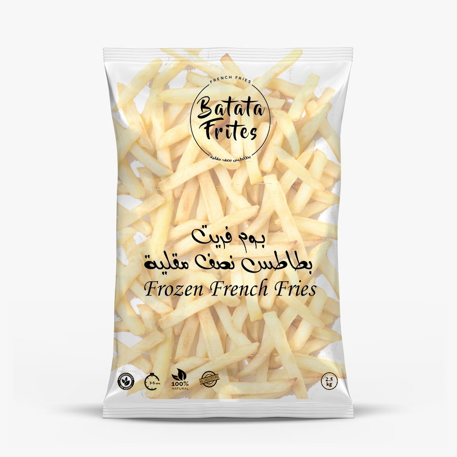

بطاطس بوم فريت 2.5 كج
-:المواصفات
حجم الكيس: 2.5 كيلو غرام
الفرز: ثاني
المكونات: البطاطس - زيت النخيل
التحضير: في المقلاة من 5 إلي 7 دقائق علي حرارة متوسطة
-:القيم الغذائية
طاقة: 115 كالوري
كربوهيدرات: 17.6 غرام
بروتين: 2.51 غرام
دهون: 9.81 غرام
الياف: 2.1 غرام
سكر: 1.63 غرام
صوديوم: 17 مليغرام